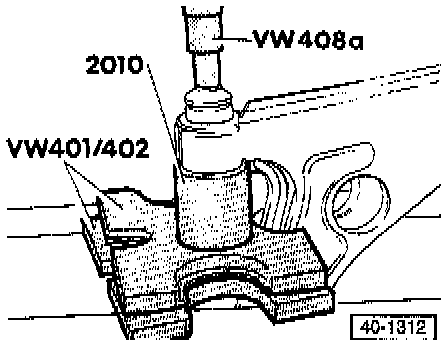

Stabilizer Bar: Service and Repair
WARNING:- Do not re-use fasteners that are worn or deformed in normal use.
- Some fasteners are designed to be used only once, and are unreliable and may fail if used a second time. This includes, but is not limited to, nuts, bolts, washers, circlips and cotter pins.
- Always follow recommendations by replacing these fasteners with new parts where indicated, and any other time it is deemed necessary by inspection.
NOTE:
- Directly below the component legend are the Fig. numbers. Please refer to these for information regarding removal and installation instructions.
- The following Plus suspension components are different from the Base suspension:
- Control arm
- Ball joint
- Wheel bearing housing
- Stabilizer bar and link rod
- Axle shaft Brake disc
- Wheel hub
- Wheel rim

1 Ball Joint To Mounting Plate Bolt
- Tighten to: 35 Nm (26 ft. lbs.)
2 Ball Joint
- Checking. Testing and Inspection
- Check rubber boot for damage and replace ball joint if necessary
- Mark installation position before removing
- If removed, install at center of elongated hole and check toe setting
- Elongated holes are NOT intended for camber adjustment
3 Mounting Plate
4 Ball Joint To Strut Self-Locking Nut
- Tighten to: 45 Nm (33 ft. lbs.)
5 Rear Bushing For Control Arm
- Installation position, refer to Fig. 2
- Pressing out/in, refer to Fig. 3
- Modified version available as a replacement. Application and ID
6 Link Rod
- Not for USA/Canada vehicles
7 Link Rod
8 Stabilizer Bar
- Diameter: 20 mm
9 Stabilizer Bar Mounting
10 Cap Nuts
11 Clamp
12 Vibration Damper
- Not for vehicles with VR6 engine
13 Vibration Damper Mounting Bolt
- Tighten to: 25 Nm (18 ft. lbs.)
14 Vibration Damper Mounting Bolt
- Tighten to: 25 Nm (18 ft. lbs.)
15 Subframe
- Removing/installing, refer to Fig. 4
- For removal with control arms but without steering gear, use support tool No. VAG 1383, or equivalent
- Aligning engine/transmission assembly, refer to Repair Group 10
- After installing, align front wheels if connection between steering gear and subframe has been loosened
16 Bolt
- 12 x 1.5 x 82 mm
- Tighten to: 50 Nm (37 ft. lbs.) plus additional 1/4 turn (90°)
17 Bolt
- 12 x 1. 5 x 78 mm
- Tighten to: 70 Nm (52 ft. lbs.) plus additional 1/4 turn (90°)
18 Bolt
- 12 x 1.5 x 65 mm
- Tighten to: 70 Nm (52 ft. lbs.) plus additional 1/4 turn (90°)
19 Bolt
- Tighten to: 65 Nm (48 ft. lbs.)
20 Front Bushing For Control Arm
- Pressing out/in, refer to Fig. 1
21 Nut
- Tighten to: 25 Nm (18 ft. lbs.)
22 Control Arm
23 Bolt
NOTE: For this procedure, use the tools shown in the following illustrations or their equivalents.

Fig. 1 - Front Bushing For Control Arm, Pressing Out/In
- Coat bushing with lubricant (e.g. soft soap) before pressing in

Fig. 2 - Rear Bushing For Control Arm, Installation Position
- One of two arrows on bushing must point to recess on control arm
- Kidney shaped opening in bushing must point toward center of vehicle

Fig. 3 - Rear Bushing For Control Arm, Pressing Out/In

Fig. 4 - Engine/Transmission Assembly, Supporting While Removing Subframe